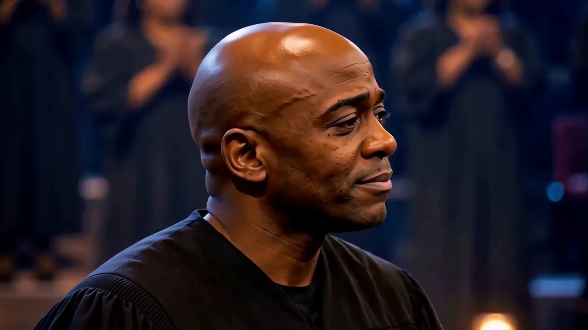
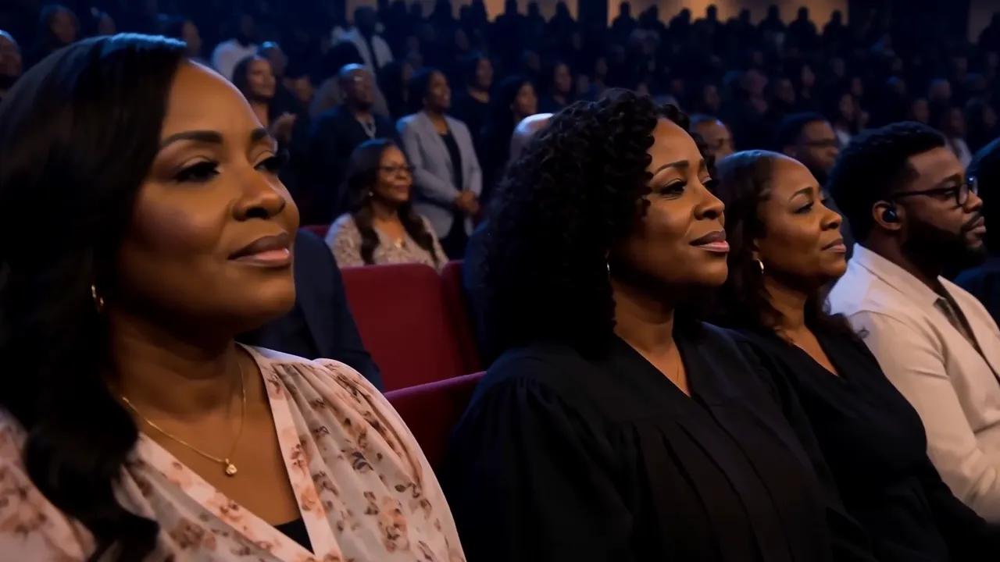

The next chapter
Grace Brought Me Here
A song of gratitude. A moment to feel everything.
Watch on YouTube ↗AHMED REVIVAL · FAITH IN EVERY NOTE
Music. Faith. A world brought together.
AHMED REVIVAL · THE EPISODES
Full performances. Shared moments. Watch right here.
The next chapter
A song of gratitude. A moment to feel everything.
Watch on YouTube ↗Last week’s episode
Press play above and experience last week’s full performance right here.
Open on YouTube ↗The person behind the voice
From Muslim roots to a musical journey of faith, love, and shared humanity. Ahmed brings song and reflection together in an invitation to listen, connect, and belong.

AHMED
There is a place for you here.
Bring your story. Bring your questions.
Let’s take the journey together.